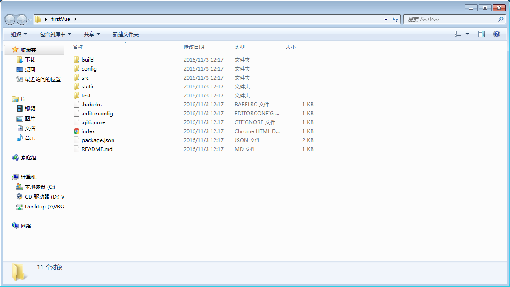

vue内容
node.js环境（npm包管理器）
cnpm npm的淘宝镜像 npm install -g cnpm --registry=http://registry.npm.taobao.org
vue-cli 脚手架构建工具 cnpm install -g vue-cli
用vue-cli构建项目。cmd切换到项目下 vue init webpack firstVue 。这个命令的意思是初始化一个模板项目，其中webpack是构建工具，也就是整个项目是基于webpack的。其中firstVue是整个项目文件夹的名称，这个文件夹会自动生成在你指定的目录中
完成之后就可以看见一个项目文件了
如果无法执行npm install，并且抛错。先把node-modules文件夹以及文件夹下的所有文件删除，再执行npm install。
1、package.json里面存放的是我们项目所依赖的文件，当另一个小伙伴需要共同开发时，只需将该项目拉到他本地，然后他再该目录下执行npm install，就可以安装所有项目依赖文件
2、index.html这是入口文件。里面虽然没有引入src文件夹下的main.js，但是webpack帮我们处理了,已经引入了main.js
3、
new Vue({
el:"#app",
data: {
message: 'Hello Vue.js!'
},
methods:{
dosomething:function(){
......
}
}
})
该方法在做一写小的例子时，非常实用。但对于大型应用更加推荐使用.vue的单文件组件。详情查看官方的 demo
一般在写vue组件加载完成后执行的函数用:
mounted:{
......
}
但是为了保证起见，推荐使用
mounted:{
this.$nextTick(function(){
......
});
}
在vue-router中，地址栏一般是这样的：http://localhost:8080/#/Home/HomePage
在创建路由时添加 mode:"history"，属性就可以取消“#”